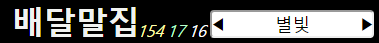
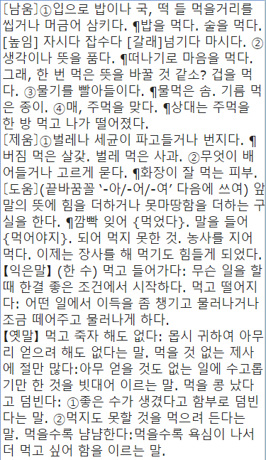

글틀 얼개
- ― 쥐 왼 누르개를 누릅니다.
- -- 쥐 왼 누르개를 두 번 빠르게 누릅니다.
- = 쥐 오른 누르개를 누르거나 길게 누릅니다.

①②③④⑥⑤⑦
- ① 글틀 이름 ―겨레말살리는이들 보기
- ② 올림말 수 ―올림말 살피는이 보기
- ③ 자취 수 ―자취 남긴 이 보기
- ④ 적바림 수 ―적바림 쓴 이 보기
- ⑤ 올림말 찾기 물음
- ⑥ ―앞 물음으로 가기
- ⑦ ―뒷 물음으로 가기
| ! | 열어 본 올림말 |
| 아 | ‘아’가 들어 있는 올림말 |
| 아* | ‘아’부터 가나다순 |
| * | 처음부터 가나다순 |
| -* | 끝부터 가나다 역순 |
| -아* | '아'부터 가나다 역순 |
| !! | 새 올림말이나 새로 고친 올림말 |
| @ | 내 올림말 |
| -@ | 내가 처음 넣은 올림말부터 |
| 아@ | 내 올림말 ‘아’부터 가나다순 |
| -아@ | 내 올림말 ‘아’부터 가나다 역순 |
| @ㅇㅇ | ㅇㅇ님 올림말 |
| -@ㅇㅇ | ㅇㅇ님이 처음 넣은 올림말부터 |
| 아@ㅇㅇ | ㅇㅇ님 올림말 ‘아’부터 가나다순 |
| -아@ㅇㅇ | ㅇㅇ님 올림말 ‘아’부터 가나다 역순 |
| # | 내가 자취 남긴 올림말 |
| #ㅇㅇ | ㅇㅇ님이 자취 남긴 올림말 |
| $ | 내가 적바림 쓴 올림말 |
| $ㅇㅇ | ㅇㅇ님이 적바림 쓴 올림말 |
| ^ | 내 올림말 가운데 올린 것 |
| ^ㅇㅇ | ㅇㅇ님 올림말 가운데 올린 것 |
| & | 내 올림말 가운데 버린 것 |
| &ㅇㅇ | ㅇㅇ님 올림말 가운데 버린 것 |
①②③④⑤⑥
- ① ―올림말 열기 =올림말 바꾸기
- ② ―자취 열기
- ③ ―적바림 열기 =새 적바림 쓰기
- ④ ―도움말 열기 =게시판(도움말의 적바림) 열기
- ⑤ ―내 정보 열기
- ⑥ ―나가기
• 올림말 열기
… 올림말 살피는이일 때
①②③④
- ① ―올림말 풀이 손질 (올림말 아래 놓입니다.)
- ② 갈무리한 때
- ③ 판단(더살핌, 올림, 버림) ―바꾸기
- ④ 올림말 살피는이 (나) ―바꾸기
• 올림말 열기
… 올림말 살피는이가 아닐 때
①②③④
- ① ―올림말 풀이 손질 (자취가 됩니다.)
- ② 갈무리한 때
- ③ 판단(더살핌, 올림, 버림)
- ④ 올림말 살피는이 (남)
• 자취 열기
… 올림말 살피는이일 때
①②③④⑤
- ① ―자취 손질 (올림말 아래 놓입니다.)
- ② ―자취 보기
- ③ ―자취 올림 (올림말 아래 놓입니다.)
- ④ 갈무리한 때 ―닫기/열기
- ⑤ 갈무리한 사람
• 자취 열기
… 올림말 살피는이가 아닐 때
①②③④
- ① ―자취 손질 (자취가 됩니다.)
- ② ―자취 보기
- ③ 갈무리한 때 ―닫기/열기
- ④ 갈무리한 사람
①②③
- ① ―적바림 손질
- ② 갈무리한 때 ―닫기/열기
- ③ 적바림 쓴 사람
①②③④⑤⑥⑦⑧⑨
- ① 미리 보기, 되돌리기, 갈무리, 지우기, 탈바꿈, 내려받기
- ② 씨가름: 〔이〕〔움〕〔그〕〔매김〕〔어찌〕〔느낌〕〔토〕 . . .
- ③ 뜻가름: ①② . . . 물3◯→물③, ㄱ◯→㉠, 가◯→㉮
- ④ 쓰임
- ⑤ 본딧말, 준말, 한뜻말, 비슷한말, 맞선말, 다듬은말
- ⑥ 큰말, 작은말, 센말, 여린말, 높임말, 낮춤말, 갈래말
- ⑦ 가보시오
- ⑧ · (가운뎃점) ‘작은따옴표’ “큰따옴표” «출전» ― …［테두리］
- ⑨ 【덧풀이】 【익은말】 【옛말】 【끝바꿈】
①②
• 올림말 풀이 얼개
• 올림말 풀이 손질

• 올림말과 풀이 보기